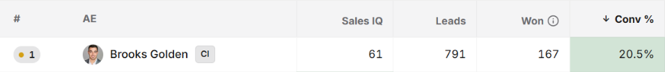
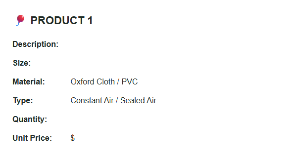
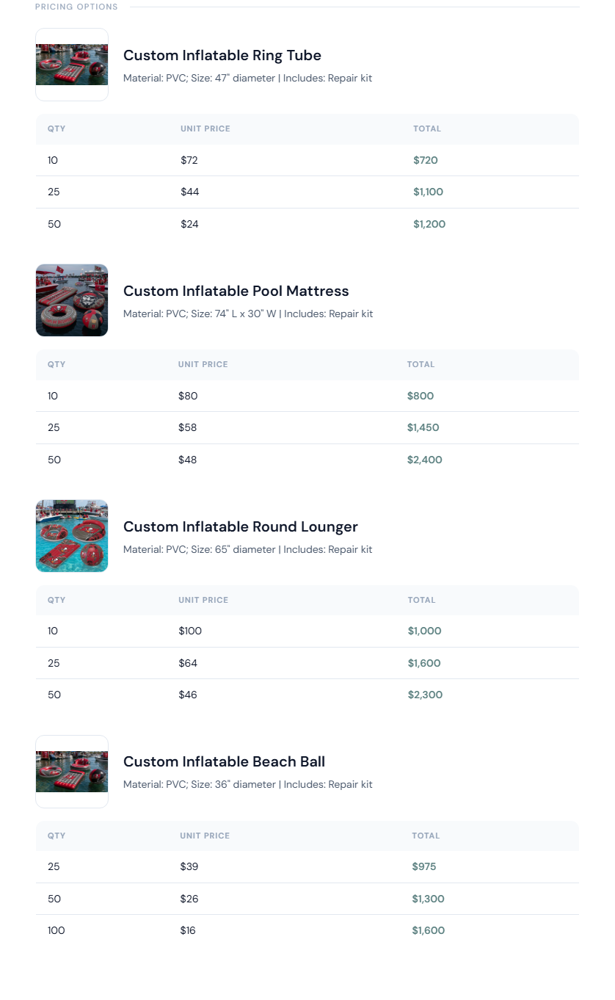
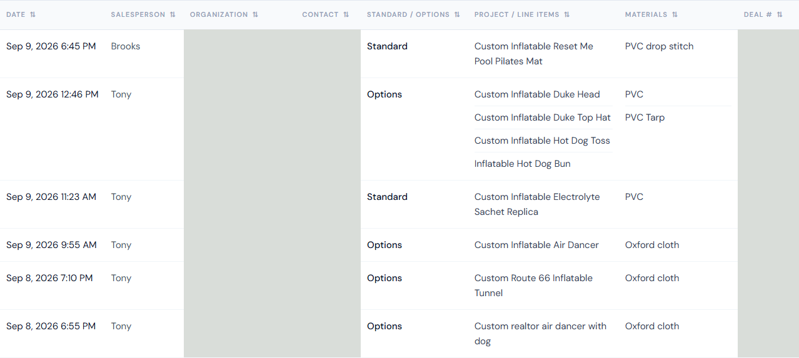
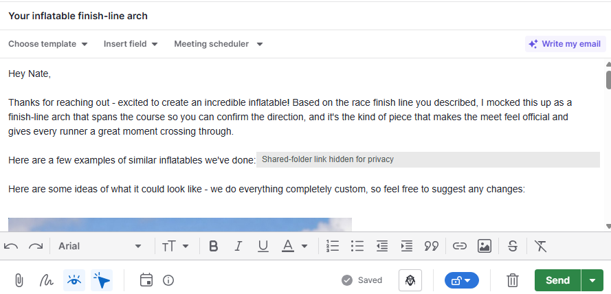
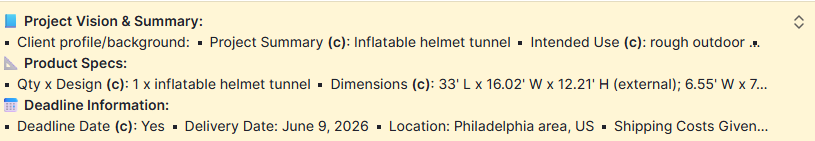

Conversion, ranked #1 of 17 active reps
Founder case study · Custom manufacturing · 2026
AI enablement at
Custom Inflatables
A sales role went from roughly 10-hour days to 4–8-hour days, while Brooks Golden ranked first for conversion on the company’s active-rep leaderboard.
The work connected the entire customer journey: the first reply, the product concept, the quote, the next call and the production handoff.
Daily work, down from roughly 10 hours in busy season
189 replies from 388 emails classified as first responses
These figures cover different periods and sources. Hours are self-reported; the email analysis includes messages from before and during implementation. Method and limitations
The results
Less administration.
Strong sales performance.
Brooks joined in February. A manual transcript parser came first in March. Connected automation expanded in April and evolved through the summer.

Monthly new-lead conversion
Company workbook Brooks-reported
June: 32 new orders / 124 adjusted leads. Company workbook, PS Stats J73.
MarchTranscript-to-quote tool
AprilConnected CRM workflows
SummerMonitoring, repair and review
The workbook’s formula is (orders − returning orders) / (leads − returning orders). This is an observed performance trend, not an isolated estimate of AI’s causal impact.
The connected workflow
Each automation removed a different obstacle.
A quick reply starts the conversation. A clear visual and quote make the decision easier. Follow-up keeps it moving. Shared context carries the promise into production.
01 · First response and reply drafts
Start with the customer’s actual project.
New inquiries became relevant first responses using the project details and deadline. Later replies could arrive with a draft already prepared from the deal’s context.
- Time saved
- Less reading, reconstructing and composing from scratch.
- Sales purpose
- Keep an interested prospect engaged while the request is fresh.
“Thanks for getting back so quickly Brooks.”
Customer email, July 14, 2026. Name omitted.
July 15 · Concept selected“I prefer #3 if you can get me a quote for that, I would appreciate it.”
July 22 · Order requestedThe same customer requested the six-foot version and selected add-ons.
One archived conversation shows the steps connecting. It illustrates the workflow, not an isolated measure of automation’s effect on the sale.
02 · Product concepts and past-project examples
Give the buyer something they can picture.
A custom product is hard to buy from a description alone. The workflow prepared branded concepts and selected relevant examples of prior projects for the email.
- Time saved
- Less manual image generation and searching through folders.
- Sales purpose
- Help the customer understand the proposed product and give specific feedback.
Generated concepts and real project photographs served different purposes. Concepts were illustrative, not manufacturing approvals.

03 · Transcript to quote
From a call transcript
to a prepared quote.
Brooks estimates that a manual quote took 10–15 minutes after a call. The transcript parser extracted the requirements and prepared a standard or options quote, alongside email copy and an image prompt.
BeforeRemember the call. Fill each field.

AfterReview a populated, shareable quote.

Less re-entry. Specifications, quantities, materials and pricing rules fed the quote and prepared email.
A clearer buying decision. Consistent options and visuals made the offer easier to review.
A shared source of information
Make past work searchable.
A centralized quote index exposed the product, material, quote type and deal reference. A separate project-photo catalog made relevant examples easier to find.
- Time saved
- Reuse known information instead of hunting across deals, notes and folders.
- Sales purpose
- Answer questions with more context and a relevant example.

04 · Follow-up, calls and pipeline accountability
Keep the next human action visible.
Stage-aware reminders and prepared follow-ups kept deals moving. Incoming replies changed what should happen next. Activity checks flagged missing follow-up; response deadlines surfaced unanswered customers.
- Time saved
- Less daily pipeline triage and rewriting routine follow-ups.
- Sales purpose
- Bring attention back to the right customer, including a prompt to call or send an SMS.
An instruction used by the workflow
“Call or send SMS to the prospect:”
The system prepared the context. Brooks handled the conversation, judgment and relationship.
Source: the Contacted-stage reminder workflow.
05 · Customer service and engineering handoff
Carry the deal’s context into delivery.
The system assembled a Project Vision & Summary from the deal: product specifications, intended use, timing and interaction history. The sales conversation became usable handoff information.
- Time saved
- Less manual reconstruction for customer service and engineering.
- Delivery purpose
- Preserve the customer’s requirements and distinguish purchased scope from earlier options.

- Product and intended use
- Quantity, dimensions and material
- Deadline and delivery context
- Customer decisions and open questions
The documented automation prepared this content in Pipedrive. This screenshot is not an Asana task-creation record.
How it worked
How the automation ran
and stayed accountable.
The implementation worked through Pipedrive’s interface without Pipedrive API access. Running it reliably required scheduling, verified outcomes and a repair process.
Secure accessTailscalePrivate connection to the VPS
ExecutionCloud VPS + browserScheduled workers and shared state
Customer workflowPipedrive + outputsEmails, quotes, activities and handoffs
Check the result
Confirm the email, saved draft or required activity exists. A completed script alone is insufficient.
Control repair work
Paperclip tracked issues. QA investigated, the architect reviewed changes, and an auditor checked the fix.
Control usage
Bounded retries, cached context and scheduled checks limited repeat work. Models were assigned by task and could switch between Claude and Codex.
See the reliability and cost controls
One shared browser
A browser lock prevented workers from navigating over one another. Queues let delayed jobs release the browser and try again later.
Outcome monitoring
Checks looked for uncontacted leads, missing activities and overdue replies. Unresolved failures entered the repair loop.
Evidence-based repairs
Changes required a bounded fix, relevant checks and verification of the affected customer outcome. Independent review reduced recurring failure classes.
Useful notifications
Escalation rules distinguished problems needing human action from recoverable or duplicate events.
Scheduled work
Workers ran at defined times and stages, with business-hour and weekend rules. Timing depended on the customer promise.
Provider flexibility
Named Claude, Codex and mixed profiles separated routing from workflow logic. Fallback and cooldown rules handled model limits.
Why this matters to Keelwater
The workflow pattern transfers.
The implementation must be specific.
This is a prior founder implementation in custom manufacturing. It demonstrates hands-on delivery; it is not a claim of accounting-firm results.
| Demonstrated here | Possible accounting application | Purpose |
|---|---|---|
| Transcript → quote | Discovery call → draft scope or proposal | Reduce re-entry |
| Deal context → prepared reply | Client context → draft status update | Respond with relevant information |
| Next-action and reply checks | Missing-document and deadline follow-up | Keep work moving |
| Deal → production handoff | Onboarding → delivery-team handoff | Preserve context |
Accounting applications above are prospective and require firm-specific access, controls, professional review and measurement.

Brooks Golden · Founder, Keelwater
Designed, implemented and operated the workflow while carrying the sales role. The aim was to create capacity and use it to serve customers better.
Sources, measurement and what these results establish
Conversion and ranking
February–June values come from the company’s Custom Accounting Overview - Through June 2026, PS Stats, cells F73:J73. The workbook reports 107 new orders / 527 adjusted leads, or 20.3%, cumulatively through June, ranked first among its 20 listed reps. July’s 24.1% and August’s approximate 22.5% are supplied by Brooks and are not yet reconciled to monthly reports.
The later Customs OS screenshot reports 20.5% and rank 1 among 17 active reps. Its visible January–September date filter extends beyond Brooks’s September 18 final day. The dashboard’s conversion is preserved as reported; dividing its total wins by total leads gives a different figure. The two reports cover different periods and populations.
Email replies
A July 31 archive analysis classified 388 outbound messages as first responses, dated February 5–July 29. Of those, 189 received a reply before the next outbound touch; outbound bursts within six hours were grouped. This classification includes messages before full automation. Brooks recalls an earlier 10–20% reply rate, but that baseline has not been independently established.
Time and attribution
The roughly 10-hour versus 4–8-hour days and 10–15 minutes spent on manual quotes are Brooks’s estimates, not time-tracking measurements. Lead mix, seasonality and sales experience may also affect conversion. The evidence demonstrates the implementation and observed outcomes; it does not isolate the effect of each automation.
Visual evidence
The leaderboard and CRM excerpts come from original screenshots. The quote template and generated quote are rendered from archived HTML. Product concepts are original generated candidates. Customer identifiers and shared-folder links are omitted or masked where needed. Raw customer records remain private.
AI enablement for tax and CAS firms
Where does your team
lose time between steps?
Start with a real workflow, identify the repeated work and measure what changes.
Discuss a design partnership